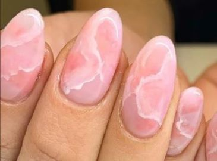

UÑAS: FORMAS Y EFECTOS
acrilicas
semipermantes
en gel
esculpidas
Uñas de gel o acrílicas: diferencias y ventajas
Si te vas a rendir al 'nail art' más original de la temporada, y salvo que seas una manitas o una artista, vas
a tener que recurrir a los servicios de un profesional.
Ahí, en tu salón de cabecera, te darán a elegir entre las diferentes técnicas existentes, de las cuales dos
están en pleno auge este año.
Por un lado hablamos de la tradicional manicura de gel y, por otro, de la acrílica.
No todo el mundo conoce sus diferencias pero Pame nos las cuenta.
"Las principales diferencias entre gel y acrílico es que el gel se seca con lámpara UV, es un único producto, no
tiene olor
y el resultado es más natural y flexible que el acrílico", comenta la experta.
Además, añade que se trata de una sustancia más respetuosa con las uñas, ya que contiene menos químicos.
Sin embargo, las uñas acrílicas se secan al aire y han de ser mezcladas con un líquido llamado monómero,
"que hace que este sea más resistente por la cantidad de químicos que lleva y desprende un olor fuerte",
comenta.
Romy asegura, sin embargo, que la técnica del acrílico es perfecta para uñas XL, por la dureza que aporta.
| EFECTO FRANCESITA |
EFECTO VELVET |
EFECTO MARMOL |
|
 |
 |